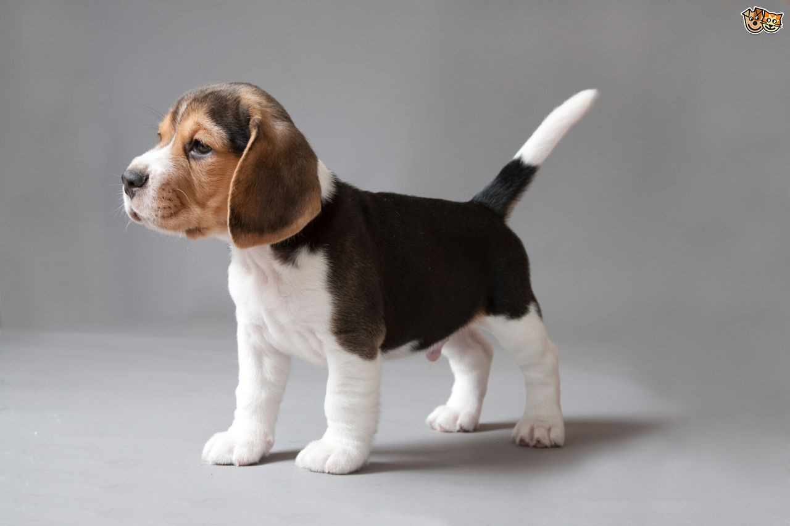

Beagle
Weight
Coat
Color
10-11 kgs
Sort haired, hart coat and medium length
Many colors
The beagle is a breed of small hound that is similar in appearance to the much larger foxhound. The beagle is a scent hound, developed primarily for hunting hare (beagling). Possessing a great sense of smell and superior tracking instincts, the beagle is the primary breed used as detection dogs for prohibited agricultural imports and foodstuffs in quarantine around the world. The beagle is intelligent. It is a popular pet due to its size, good temper, and a lack of inherited health problems.